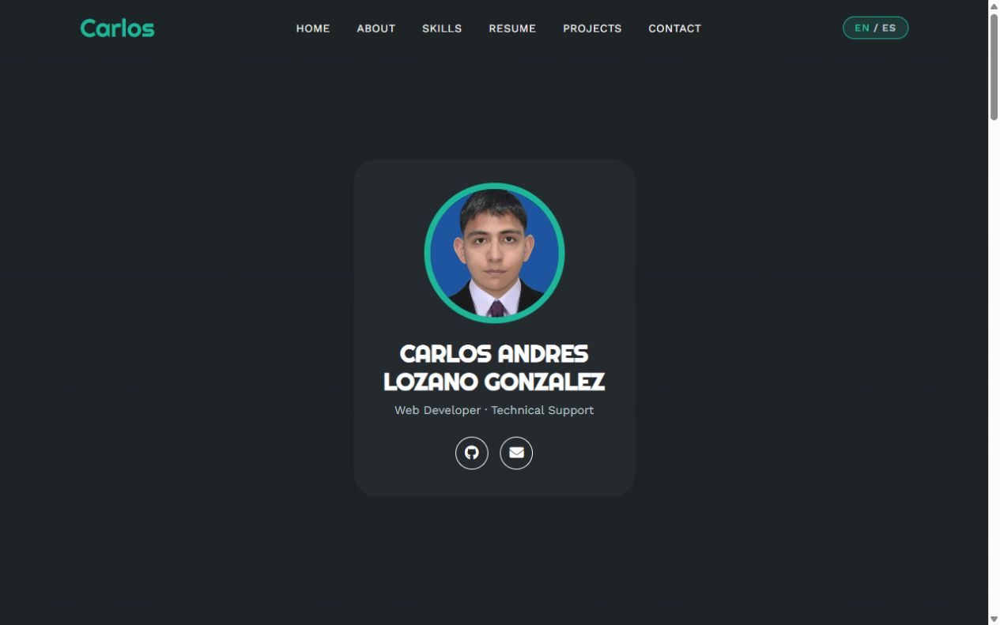

Perfil web personal
HTML · CSS · JavaScript
Adapté una plantilla académica para crear mi portafolio personal. Presenta mi formación, habilidades y proyectos, y permite cambiar entre español e inglés.
Soy estudiante de programación web y disfruto aprender sobre tecnología. Me gusta estudiar inglés, jugar videojuegos y mejorar mis conocimientos en programación, especialmente con Laravel. Me considero una persona extrovertida e introvertida dependiendo del ambiente. Me gusta mucho mi carrera y quiero seguir creciendo como desarrollador y aprendiendo nuevas herramientas.
Actualmente estudio el Técnico Profesional en Programación Web.
He estudiado inglés desde los 13 años porque siempre me ha gustado aprender idiomas extranjeros.
He adaptado una plantilla académica para crear un portafolio personal bilingüe con HTML, CSS y JavaScript.
He practicado desarrollo web mediante proyectos académicos. Actualmente estoy desarrollando Match Educativo con PHP y Laravel.

HTML · CSS · JavaScript
Adapté una plantilla académica para crear mi portafolio personal. Presenta mi formación, habilidades y proyectos, y permite cambiar entre español e inglés.
En desarrollo
PHP · Laravel
Proyecto web educativo en desarrollo. He creado una API de registro de usuarios que valida los datos y aplica hash a las contraseñas. El backend utiliza PHP y Laravel.
Práctica académica
PHP · Laravel · Blade · HTML
Ejercicio académico que conecta una ruta, un controlador y una vista Blade. El controlador envía el nombre de un estudiante a una página con una plantilla reutilizable que muestra un saludo.
Puedes contactarme por correo electrónico o por medio de mi perfil de GitHub.